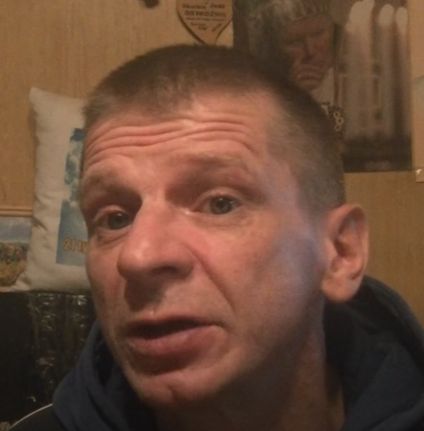
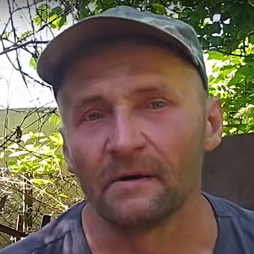

Uniwersum szkolnej
Uniwersum Szkolnej 17, Uniwersum Szkolna 17, US17, Uniwersum Kononowicza (bardzo rzadko używana nazwa) – ogół postaci, miejsc i zdarzeń związanych z losami rezydentów domku drewnianego przy ul. Szkolnej 17 w Białymstoku.
Uniwersum szkolnej jest to miejsce szalonych perypetii Krzysztofa Kononowicza, Andrzeja Geremka, Majora Suchodolskiego, wszyscy bohaterowie Uniwersum mieszkali na Szkolnej 17.
Uniwersum jest w pełni kompatybilne ze światem zewnętrznym i każdy może je swobodnie edytować (poprzez np. wysłanie paczki bożej). Nie obowiązują tu tradycyjne prawa logiki. Obecnie przez lateksową cenzurę niestety utraciło większość swojego klasycznego klimatu. Trwa powszechne oczekiwanie na dzień jego wyzwolenia, który ma kiedyś nastąpić.
| KRZYSZTOF KONONOWICZ PSEUDONIM: KNUR | MAJOR SUCHODOLSKI PSEUDONIM: NITROŁAK  | POSTAĆ POBOCZNA: ANDRZEJ GEREMEK PSEUDONIM: PRACOWNIK UMYSŁOWY  |
POSTAĆ POBOCZNA: JAN ŁOŚ
PSEUDONIM: BO RODO zm. 2020

|